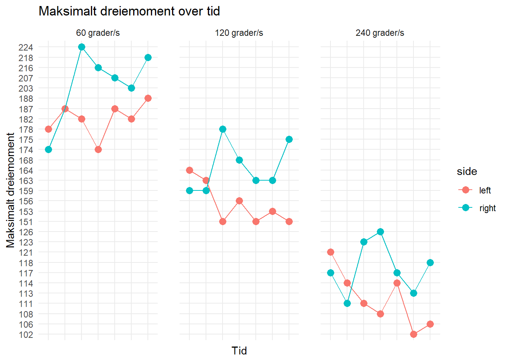

Effekten av styrketrening på isokinetisk kneekstensjon: En 3-ukers case-studie
1 Introduksjon
Sprintsyklister er kjennetegnet ved evnen til å produsere høy kraft og akselerasjon over korte distanser (200 - 1000m), og en avgjørende faktor for prestasjon vil være maksimal kraft i kneekstensjon (Martin et al., 2007; Rønnestad et al., 2015). Vi ser også at det er en sterk sammenheng mellom prestasjon i sykkelidrett og muskelmasse i øvre lår (Dorel et al., 2005; Rønnestad et al., 2015). Det vil dermed være naturlig for en sprintsyklist å utføre trening for å øke muskelstyrken i kombinasjon med sin vanlige sykkeltrening. Styrketrening i form av progressiv motstandstrening er en effektiv metode for å øke muskelstyrke, og benyttes ofte av sprintsyklister i periodene mellom konkurransestevner (Rønnestad et al., 2015).
Vi ønsket å undersøke effekten av en treningsintervensjon på underekstremitetene på maksimalt dreiemoment i kneekstensorene. Gullstandarden for måling av muskelstyrke er et isokinetisk dynamometer (Stark et al., 2011), og vi benyttet HUMAC-Cybex dynamometeret (HUMAC NORM, Computer Sports Medicine Inc., USA) som måleinstrument. Med dette som bakgrunn utførte vi en case-studie av en 24 år gammel nasjonal elitesprintsyklist som var i en fase mellom konkurransestevner, og trente progressiv styrketrening av underekstremitetene i 3 uker Samtidig testet vi deltakerens maksimale dreiemoment i kneekstensjon i tre forskjellige hastigheter; 60 °/s, 120 °/s og 240 °/s.
Hypotesen vår er at deltakeren vil måle økt maksimalt dreiemoment i kneekstensjon etter intervensjonen, sammenlignet med pre-test.
2 Metode
2.1 Deltakeren
Deltakeren var en 24 år gammel nasjonal elitesprintsyklist (høyde: 165cm, vekt: 64 kg). Prosjektoppstart var 10 dager etter siste sykkelritt. Deltakeren hadde 3 år med erfaring som elitesprintersyklist, og trente minimalt de 10 dagene etter ritt, da deltager hadde en pause før studieoppstart. Han hadde tidligere erfaring med progressiv styrketrening, men han hadde ikke trent styrketrening på > 6 måneder. Han hadde også tidligere erfaring med øvelsene som ble utført i intervensjonen.
Deltakeren rapporterte ingen kontraindikasjoner eller skader ved studieoppstart.
2.2 Standardisering og familiarisering
Deltakeren gjennomførte to tilvenningstester (16.09 og 18.09) for å redusere innflytelse av læringseffekten på resultatene (Hopkins, 2000).
Deltakeren utførte to tester i uken i en periode på tre uker, og vi endte opp med seks tester totalt. Testtidspunktene ble standardisert til tirsdag og torsdag hver uke, og ble utført på samme tidspunkt på døgnet for å redusere innflytelsen av døgnrytmen. Deltakerens koffein- og matinntak ble standardisert. Deltakeren utførte treningsprotokollen cirka én time etter hver test, og han hadde 48 timers restitusjon mellom hver test.
2.3 Sikkerhetsprotokoll
Før teststart, ble HUMAC Cybex-apparatet kalibrert og stilt inn til deltakerens antropometriske mål i henhold til ReLieF-manualen. De spesifikke innstillingene kan man finne som et separat filvedlegg i GitHub-repositoriet.
Testen kunne avbrytes hvis deltakeren opplevde sterkt ubehag eller smerte.
2.4 Testprotokoll
Oppvarmingen bestod av 10 minutter med progressiv ergometersykling. Motstanden på ergometersykelen ble styrt av deltakeren.
Testprotokollen vår tok utgangspunkt i “ReLieF”-protokollen. Denne protokollen har en innebygd oppvarming, og tester maksimalt dreiemoment i tre forskjellige vinkelhastigheter (60 °/s, 120 °/s og 240 °/s). Deltakeren utførte maksimal konsentrisk kneekstensjon fra 90° knefleksjon til 0° kneekstensjon. Protokollen har også en egen oppvarming og testing av maksimal isometrisk kneekstensjon, men deltakeren utførte ikke denne delen av protokollen siden vi kun ønsket å undersøke isokinetisk kneekstensjon.
2.4.1 Tabell 1: Modifisert ReLieF protokoll
Alle oppvarmingene og testene starter med høyre ben
| Hastighet | Oppvarming | Pause mellom oppvarming og test | Test | Pause mellom test (sekunder) |
|---|---|---|---|---|
| 60 °/ | 3 | 30 | 3 | 60 |
| 120 °/ | 3 | 30 | 3 | 60 |
| 240 °/ | 3 | 30 | 3 | 60 |
2.5 Treningsprogrammet
Oppstartstidspunktet for intervensjonen var x.09.25, x antall dager etter første pre-test (16.09.25)
Treningsprogrammet bestod av to ukentlige styrketreningsøkter over en 3-ukers periode, og ble gjennomført på tirsdager og torsdager. Hver økt ble utført cirka en time etter utført isokinetisk testing. Når øvre grense for repetisjonsområde ble nådd innenfor det angitte RIR målet, ble motstanden økt med 5%.
Tempo under utførelse av øvelsene, samt pauser mellom serier ble styrt selv av deltakeren. Alle øktene ble utført selvstendig.
2.5.1 Tabell 2: Treningsprogrammet
*RIR = Repetisjoner i reserve (før utmattelse)
| Øvelse | Serier | Repetisjonsområde | RIR* |
|---|---|---|---|
| Knebøy med stang | 3 | 6 - 8 | 2 |
| Kneekstensjon i maskin | 3 | 6 - 8 | 1 |
| Leg curl | 3 | 6 - 8 | 3 |
| Bulgarske utfall | 3 | 6 - 8 | 2 |
| Tåhev | 3 | 6 - 8 | 3 |
2.6 Databehandling
Fra hver test ble repetisjonen med høyest målt maksimale dreiemoment (Nm) brukt til statistisk analyse.
Databehandlingen og analysen ble utført i R (versjon 4.5.1). Datavisualiseringen ble utført ved hjelp av tidyverse- og readxl-pakken i Rstudio. Rådata fra HUMAC testene ble innhentet fra syv Excel-filer, og importert og prosessert til et “tidy” datasett ved hjelp av R-kode. Koden for prosesseringen er inkludert i Quarto-dokumentet og tilgjengelig i GitHub-repositoriet sammen med rådataene.
Merk: Tilvenning fra 16.09.25 ble ekskludert fra tidy-datasettet. Denne tilvenningen brukte en annen protokoll enn de syv andre testene, og var dermed ikke sammenlignbar med test 1 til 6. Pre-test i datasettet er dermed fra 18.09.25.
3 Resultater
3.1 Tabell 3: Deltakerens resultater
| Tidspunkt | Side | Maksimalt Nm 60°/s | Maksimalt Nm 120°/s | Maksimalt Nm 240°/s |
|---|---|---|---|---|
| Pre-test | Høyre | 187 | 159 | 111 |
| Pre-test | Venstre | 187 | 163 | 114 |
| Test 1 | Høyre | 224 | 178 | 123 |
| Test 1 | Venstre | 182 | 151 | 111 |
| Test 2 | Høyre | 216 | 168 | 126 |
| Test 2 | Venstre | 174 | 156 | 108 |
| Test 3 | Høyre | 207 | 163 | 117 |
| Test 3 | Venstre | 187 | 151 | 114 |
| Test 4 | Høyre | 203 | 163 | 113 |
| Test 4 | Venstre | 182 | 153 | 102 |
| Test 5 | Høyre | 218 | 175 | 118 |
| Test 5 | Venstre | 188 | 151 | 106 |
3.2 Figur 1: Linjediagram av resultatene fra Tabell 1
3.3 Tabell 4: Endring fra pre-test til test 6
| Hastighet | Side | Endring i Nm og % |
|---|---|---|
| 60°/s | Høyre | +31 (+16.6%) |
| 60°/s | Venstre | +1(0.5%) |
| 120°/s | Høyre | +16 (+10.1%) |
| 120°/s | Venstre | -12 (-7.4%) |
| 240°/s | Høyre | +7 (+6.3%) |
| 240°/s | Venstre | -8(-7%) |
3.4 Variasjonskoeffisient
Variasjonskoeffisienten (VK) beskriver spredningen av data relativt til gjenomsnittet (Atkinson & Nevill, 1988). I vår studie kan VK være et nyttig verktøy for å vurdere konsistensen til målingene til deltakeren i maksimalt dreiemoment mellom de syv ulike testene. En lav VK (<5%) vil indikere høy konsistens mellom målingene, mens en høy VK (>10%) vil indikere større variasjon mellom målingene.
3.4.1 Tabell 5: Variasjonskoeffisient mellom testene
| Hastighet | Side | Gjennomsnitt (Nm) | SD (Nm) | CV(%) |
|---|---|---|---|---|
| 60°/s | Høyre | 209.2 | 13.2 | 6.3 |
| 60°/s | Venstre | 183.3 | 5.3 | 2.9 |
| 120°/s | Høyre | 167.7 | 7.5 | 4.5 |
| 120°/s | Venstre | 154.2 | 4.8 | 3.1 |
| 240°s | Høyre | 118 | 5.7 | 4.9 |
| 240°s | Venstre | 109.1 | 4.8 | 4.4 |
3.5 Limb symmetry index
“Limb symmetry index” (LSI) er et forholdstall mellom verdien til den svakere ekstremiteten og den sterkere ekstremiteten, multiplisert med 100 for å uttrykke forholdet som en prosent (Impellizeri et al., 2008). Følgende verdier blir kalkulert med formelen (svakere ben / sterkere ben) * 100 for hver test.
Ved pre-test, målte høyre og venstre ben symmetrisk maksimalt dreiemoment (LSI = 100% ved 60 °/s). Etter treningsperioden, ble styrkeforskjellen betraktelig større mellom høyre og venstre ben (LSI = 86,2% ved 60 °/s).
4 Diskusjon
Formålet med denne studien var å undersøke effekten av tre uker styrketrening på maksimalt dreiemoment i kneekstensjon hos en elitesprintsyklist. Resultatene viste en økning i maksimalt dreiemoment ved lav vinkelhastighet (60°/s), spesielt for høyre ben (+25,3 %), mens endringene ved høyere hastigheter (120°/s og 240°/s) var små eller negative. Disse funnene støtter delvis hypotesen om at styrketrening øker maksimal styrke, men effekten ser ut til å være spesifikk for lavere bevegelseshastigheter.
4.1 Sammenheng med tidligere forskning
Økningen i dreiemoment ved lav hastighet stemmer godt overens med tidligere studier som viser at tung styrketrening forbedrer maksimal muskelstyrke og kraftutvikling, (Rønnestad et al., 2010). Rønnestad et al. (2010) viste at veltrente syklister som kombinerte styrketrening med utholdenhetstrening økte både muskelstyrke og størrelse på quadriceps, i tillegg forbedret prestasjon relatert til sprint. Martin et al. (2007) fremhever at sprintsyklistens prestasjon er avhengig av samhandlingen mellom muskelkraft og bevegelseshastighet, og at økt maksimal kraft i kneekstensjon kan bidra til høyere akselerasjon og topphastighet i banen. Dermed kan styrke økningene ved 60°/s ha en overføringsverdi til akselerasjonsfasen i sprintsykling.
At økningene falt bort ved høyere vinkelhastigheter (120°/s og 240°/s) samsvarer med tidligere funn fra Dorel et al. (2005), som viste at sammenhengen mellom dreiemoment og hastighet er ikke-lineær, og at maksimalt dreiemoment reduseres når bevegelseshastigheten øker. For å forbedre prestasjon ved høyere hastigheter kreves ofte mer spesifikk trening som eksplosiv styrketrening, og hastighetsbasert styrke eller plyometriske øvelser (Cormie et al., 2011) (legg til denne i literrautlista)
4.2 Metodiske styrker og begrensninger
Reliabilitet handler om hvor pålitelig og konsistent et måleverktøy, altså om det gir samme resultat ved gjentatte tester under standardiserte forhold. HUMAC isokinetisk dynamometer har vist høy test–retest reliabilitet og intrarater reliabilitet ved måling av styrke i underekstremitetene. Og er kjent som gullstandarden (Stark et al., 2011). Dette betyr at apparatet kan gi stabile målinger under standardiserte forhold.
I denne casestudien ble det gjort seks tester med samme testleder, under standardiserte betingelser med lik oppvarming, samme tidspunkt på dagen og ernæring. Dette bidrar til høy intrarater reliabilitet.
Totalt sett viser analysen at deltakerens maksimale dreiemoment ble målt på en konsistent måte gjennom testene. Et moderat SD under 10 % anses som akseptabelt i isokinetiske tester (Hopkins, 2000), og funnene i denne studien støtter at målingene var både stabile og pålitelige gjennom hele testperioden.
Validitet refererer til hvor godt en test måler det den er ment å måle. HUMAC isokinetisk dynamometer har vist høy validitet for måling av muskelstyrke i underekstremitetene, noe som betyr at målingene reflekterer faktisk kraftproduksjon i muskelen.
I denne case-studien gir HUMAC mulighet til å registrere både små og store endringer i muskelstyrke over tid, slik som økningen i kneekstensjon på høyre ben ved 60°/s (+25,3 %). Selv om mindre endringer eller negative verdier kan forekomme. Slik som den observerte økningen i kneekstensjon på høyre ben. Variasjonen som ble observert, på venstre ben ved høyere, kan tilskrives biologisk variasjon, tretthet og rekkefølgen på testene, men det påvirker ikke validiteten til apparatet.
Variabilitet beskriver hvor mye måleresultatene sprer seg rundt et gjennomsnitt, og er en viktig faktor å vurdere når man tolker endringer i styrke over tid.
I denne case-studien med seks tester hos en elitesprint syklist var variasjonen størst på venstre bein ved høyere hastigheter, mens høyre bein viste relativt små variasjoner, spesielt ved 60°/s (+25,3 %). Dette indikerer at målingene på høyre bein hadde lavere intra-subjekt variabilitet, det kan hende venstre bein kan ha vært mer påvirket av at venstre beinet ble testet etter høyre i hver av seks testene.
Standardavvik (SD) og variasjonskoeffisient (CV) ble brukt for å vurdere konsistensen i målingene mellom testene for både høyre og venstre bein. SD gir et mål på den absolutte spredningen rundt gjennomsnittet, mens CV uttrykker denne spredningen relativt til gjennomsnittet.
Som vist i tabell 5, var både SD og CV generelt lave for begge bein, noe som indikerer at målingene var stabile og repeterbare. Dette tyder på høy reliabilitet i testprotokollen, spesielt ved hastigheter der CV var rundt 5 %. Enkelte hastigheter viste en noe høyere CV, noe som kan skyldes naturlige variasjoner i prestasjon, teknikk eller tretthet.
Likevel finnes det flere begrensninger. For det første ble studien gjennomført på én deltaker, noe som gjør resultatene ikke-generaliserbare. For det andre ble det ikke inkludert noen form kontrollgruppe, og eventuelle forbedringer kan være vanskelig å skille fra læringseffekten. Selv om deltager gjennomførte to tilvenningsøkter (Hopkins, 2000). I tillegg var intervensjonsperioden relativt kort (tre uker) og det gjør det vanskeligere å diktere forbedringer i styrke, det er sannsynlig at en lengre periode ville gitt større forbedringer og en bedre kraftproduksjon.
5 Referanseliste
Atkinson, G., & Nevill, A. M. (1998). Statistical methods for assessing measurement error (reliability) in variables relevant to sports medicine. Sports Medicine, 26(4), 217–238. https://doi.org/10.2165/00007256-199826040-00002
Dorel S, Hautier CA, Rambaud O, Rouffet D, Van Praagh E, Lacour JR, Bourdin M. Torque and power-velocity relationships in cycling: relevance to track sprint performance in world-class cyclists. Int J Sports Med. 2005 Nov;26(9):739-46. doi: 10.1055/s-2004-830493. PMID: 16237619.
Hopkins WG. Measures of reliability in sports medicine and science. Sports Med. 2000 Jul;30(1):1-15. doi: 10.2165/00007256-200030010-00001. PMID: 10907753.
Impellizzeri, F. M., Bizzini, M., Rampinini, E., Cereda, F., & Maffiuletti, N. A. (2008). Reliability of isokinetic strength imbalance ratios measured using the Cybex NORM dynamometer. Clinical Physiology and Functional Imaging, 28(2), 113–119. https://doi.org/10.1111/j.1475-097X.2007.00786.x
Martin, J. C., Davidson, C. J., & Pardyjak, E. R. (2007). Understanding sprint-cycling performance: The integration of muscle power, resistance, and modeling. International Journal of Sports Physiology and Performance, 2(1), 5-21. https://doi.org/10.1123/ijspp.2.1.5
Rønnestad BR, Hansen EA, Raastad T. Effect of heavy strength training on thigh muscle cross-sectional area, performance determinants, and performance in well-trained cyclists. Eur J Appl Physiol. 2010 Mar;108(5):965-75. doi: 10.1007/s00421-009-1307-z. Epub 2009 Dec 4. PMID: 19960350.
Stark, T., Walker, B., Phillips, J.K., Fejer, R., & Beck, R. (2011). Hand-held dynamometry correlation with the gold standard isokinetic dynamometry: A systematic review. PM&R, 3(5), 472-479. https://doi.org/10.1016/j.pmrj.2010.10.025